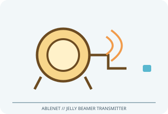

[ ADAPTIVE AND SWITCH-ACCESS CONTROLS // IDENTIFIED COMPONENT ]
AbleNet Jelly Beamer Transmitter
Cord-free wireless switch transmitter with a 2.5 in (6.4 cm) pressure surface and an external switch jack.

MODEL IDENTIFICATION: Product number 10034200 (Jelly Beamer Twist transmitter). Confirm the exact label, regional suffix, revision, receiver/accessories, software and bundle before service or compatibility claims.
Model specifications
| Catalog subcategory | Adaptive and switch-access controls |
|---|---|
| Exact device / model / SKU | Product number 10034200 (Jelly Beamer Twist transmitter) |
| Device and control operation | Integrated pressure switch sends a radio switch event to a paired compatible AbleNet Original Wireless Receiver or PowerLink 4; external 3.5 mm switch jack can provide an alternate control input. Requires the matching receiver; not direct Bluetooth/USB host input. |
| Host interface | Integrated pressure switch sends a radio switch event to a paired compatible AbleNet Original Wireless Receiver or PowerLink 4. |
| Switch/control inputs | Integrated pressure switch sends a radio switch event to a paired compatible AbleNet Original Wireless Receiver or PowerLink 4; external 3.5 mm switch jack can provide an alternate control input. Requires the matching receiver; not direct Bluetooth/USB host input. |
| Mounting and adjustability | Use its quick-ready mounting plate or compatible AbleNet mounting accessories on a stable surface. The external switch jack allows a separately positioned wired switch; transmitter/receiver range and pairing depend on environment and revision. |
| OS / host compatibility | The compatible receiver/interface mediates switch events to communication devices, adapted equipment or a computer. Host OS support depends on that receiver and software; verify kit generation before connecting. |
| Accessibility considerations | Large, colored switch cap and tactile/audible feedback provide a broad, easy-to-identify activation point without a trailing switch cable. External input supports alternate switch selection. |
Accessibility and safety notes
Large, colored switch cap and tactile/audible feedback provide a broad, easy-to-identify activation point without a trailing switch cable. External input supports alternate switch selection.
Use the correct receiver and battery type from current instructions; check battery cover and radio link before relying on it. Keep dry, avoid choking/entanglement hazards from accessories and do not assume wireless operation is fail-safe.
Document observed condition separately from manufacturer specifications. Test activation and host response in a controlled, non-safety-critical setup; record accessories, host OS, driver/app and firmware versions.
Manufacturer and support sources
- AbleNet Jelly Beamer Transmitter product pageManufacturer/support reference for model identification and setup. Confirm applicable region, hardware revision and bundle.
- AbleNet Jelly Beamer Transmitter support and instructionsManufacturer/support reference for model identification and setup. Confirm applicable region, hardware revision and bundle.
Support pages and compatibility lists can change. Retain the manual revision used for a physical-device assessment.